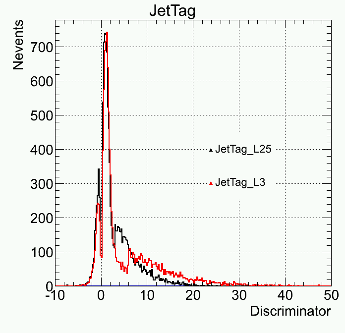
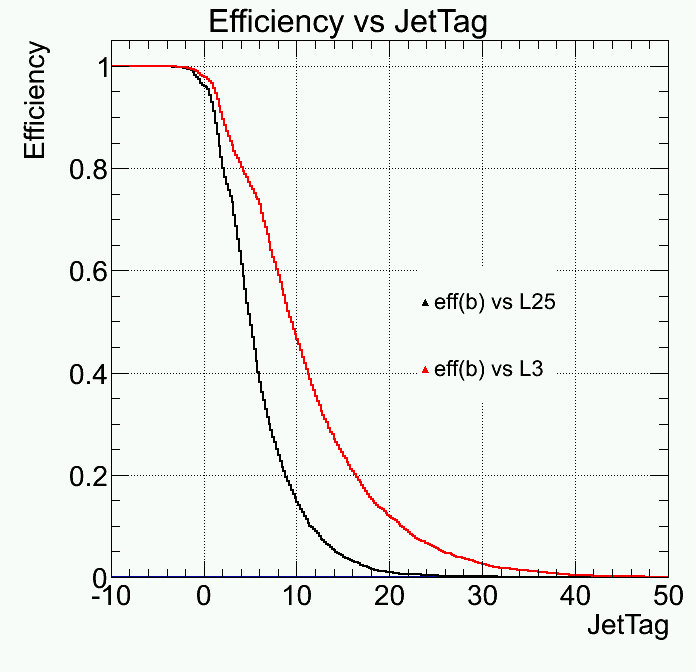
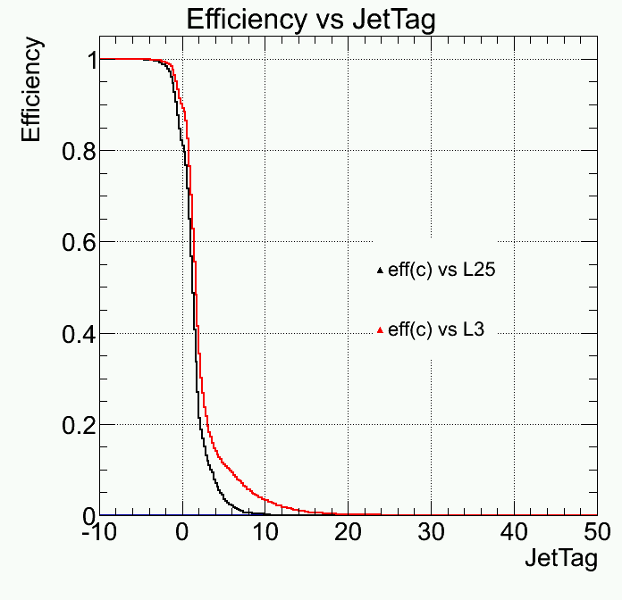
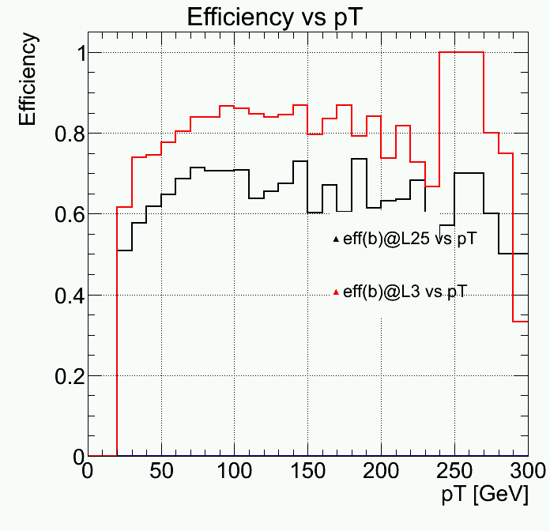
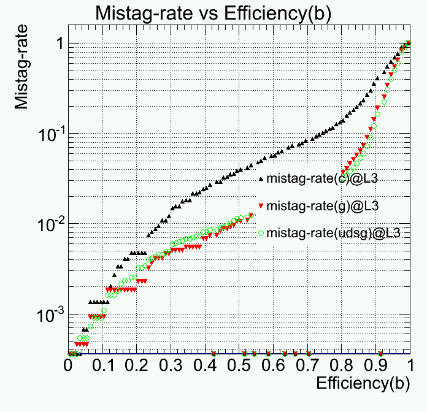
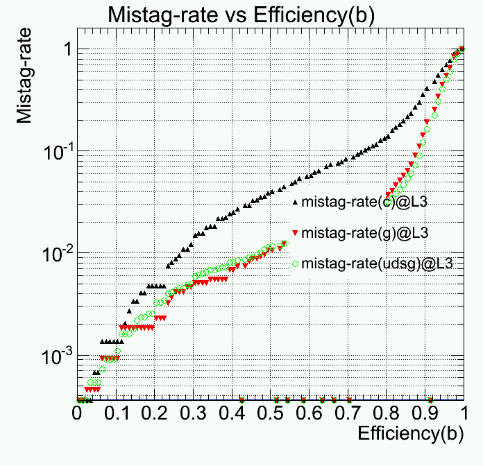
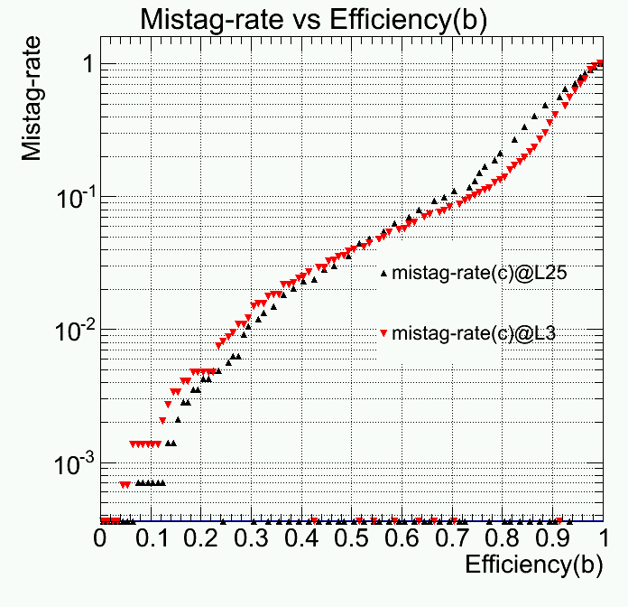

HLT/Btag Validation
| Author: | Igor Marfin |
|---|---|
| Contact: | <marfin@mail.desy.de> <marfin@cern.ch> |
| Status: | work in progress |
| Organization: | DESY |
| Version: | v0.2 |
| Copyright: | This document has been placed in the public domain. You may do with it as you wish. You may copy, modify, redistribute, reattribute, sell, buy, rent, lease, destroy, or improve it, quote it at length, excerpt, incorporate, collate, fold, staple, or mutilate it, or do anything else to it that your or anyone else's heart desires. |
| Date: | 05/18/13 |
Dedication
For Btag POG/ TSG
Abstract
This document is a brief introduction into the technical details of HLTriggerOffline/Btag. It covers a few topics related to 'how-to start', 'how-to run', 'how-to plot and test' etc
Table of Contents
Note
That's only a short introduction. Please, look at the reffered twikis for more details
1 HOW-TO start
The package HLTriggerOffline/Btag is designed to do a validation in offline DQM So far, there is only support of RelVal MC.
The structure of package is
BuildFile.xml doc/ interface/ src/ python/ test/
1.1 CVS repository
First, we have to get the code from CVS repo.
cmsrel CMSSW_5_3_3
cd CMSSW_5_3_3/src
cmsenv
cvs co HLTriggerOffline/Btag
Then we have to update the package(s) which are provides the configurations of the validation
cvs co HLTriggerOffline/Common
checkdeps -a
scram b -j4
hash -r
To test the code, we have to fix the files HLTriggerOffline/Common/python/HLTValidation_cff.py, HLTriggerOffline/Common/test/hltHarvesting_cff.py and HLTriggerOffline/Common/test/HLTValidationHarvest_cff.py
cp HLTriggerOffline/Btag/doc/HLTValidation_cff.py HLTriggerOffline/Common/python/ cp HLTriggerOffline/Btag/doc/hltHarvesting_cfg.py HLTriggerOffline/Common/test cp HLTriggerOffline/Btag/doc/HLTValidationHarvest_cff.py HLTriggerOffline/Common/test scram b -j4
2 Getting Relval samples
2.1 Producing local RelVal samples
I've tested the code w/o the access to central produced relval mc files. I've produced 10 events of TTbar for testing purpose at desy-cms013.desy.de Higgs group server @ DESY.
- Production RelVal TTbar, so called stage-i
- GEN-SIM-DIGI-etc, step 1
cd HLTriggerOffline/Btag/test
cmsDriver.py TTbar_7TeV_cfi.py -s GEN,SIM,DIGI,L1,DIGI2RAW,HLT:GRun -n 10 --eventcontent FEVTDEBUGHLT --conditions auto:startup_GRun --mc
- RAW2DIGI,RECO,VALIDATION:hltvalidation, step 2
cmsDriver.py step2 -s RAW2DIGI,RECO,VALIDATION:hltvalidation --eventcontent FEVTDEBUGHLT --conditions auto:startup_GRun -n 10 --mc --filein file:TTbar_7TeV_cfi_py_GEN_SIM_DIGI_L1_DIGI2RAW_HLT.root
After step 1 and step 2, you should have two files
TTbar_7TeV_cfi_bla_bla.root step2_bla_bla_VALIDATION.root
2.2 Getting central produced RelVal samples
Note
The central produced samples can usually be used only at lxplus.cern.ch
Of course, the code should be tested on the number of events >10 . First, we have to find relval samples. There are a few ways to get the list of the datasets and the needed files. You can visit the page [1]. But there is a more sophisticated way to get not only names of datasets but and the names of root files
Here is an example how to use DAS query [2]
dataset dataset=/RelValTT*/*/*HLTDEBUG | grep dataset.name
This is an example of getting the same info using das CLI das_client.py
das_client.py --query="dataset dataset=/RelValTT*/*/*HLTDEBUG | grep dataset.name " --idx=0 --limit=100000
I don't know why but das_client.py doesn't support plain format anymore. It outputs in JSON format.
You can find a very useful and simple parser JSON.sh in the package folder scripts/ . To get the same with parsing JSON, please do
das_client.py --query="dataset dataset=/RelValTT*/*/*HLTDEBUG | grep dataset.name " --idx=0 --limit=100000 | ./JSON.sh -b | egrep '\["data.*"name.*"\]' | awk '{print $2}'
To get the list of all root files for datasets
_dataset="/RelValTT*/*/*HLTDEBUG" das_client.py --query="dataset dataset=$_dataset | grep dataset.name " --idx=0 --limit=100000 | ./JSON.sh -b | egrep '\["data.*"name.*"\]' | awk '{print $2}' | tr -d "\"" > list && cat list | xargs -I {} echo "echo {}; echo; das_client.py --query=\" file dataset={} \" --idx=0 --limit=100000 | ./JSON.sh -b | egrep '\[\"data.*\"name.*\"\]' | awk '{print \$2}'; echo ;echo " | sh
Ok, if we've chose some root file file.root provided by the previous command, then the steps 1,2 are not needed any more.
3 The test of DQM harvesting
Ok. Before we'll continue, we have to be sure that we either `` step2_bla_bla_VALIDATION.root `` or `` file.root`` under hands. Harvesting in DQM is a production of a set of TH1 objects stored somehow in the files with names like
DQM_V0001_R00000001_CMSSW_5_3_3_Relval_TrigVal.root
If you used to get step2_bla_bla_VALIDATION.root, you can use fixed hltHarvesting_cfg.py . If you use the central RelVal file, please replace the PoolSource attribute fileNames value by file.root
Harvesting is done via
cmsRun ../../Common/test/hltHarvesting_cfg.py
3.1 Plotting DQM_V0001_R00000001_CMSSW_5_3_3_Relval_TrigVal.root
If we've done all correctly, we can produce a few plots. Later, we'll start DQM GUI server for the operation. But now, it has a sense, to produce plots manually with some script. I've prepared in scripts/ folder a few useful tools.
cuy.py v_root_lsRoot
All plottings can be done via running the command
$CMSSW_BASE/src/HLTriggerOffline/Btag/scripts/cuy.py -x HLTBtagPlot.xml --verbose
where HLTBtagPlot.xml is a configuration file of the form
<cuy> <validation type=REFREL_SAMPLE_Val file=DQM_V0001_R000000001__CMSSW_3_1_0__RelVal__TrigVal.root release=REFREL_SAMPLE_Val> <TH1 name=REFREL_JetTag_L3 source=/DQMData/Run 1/HLT/Run summary/BTag/HLT_DiJet40Eta2p6_BTagIP3DFastPV/JetTag_L3/> <TH1 name=REFREL_JetTag_Offline source=/DQMData/Run 1/HLT/Run summary/BTag/HLT_DiJet40Eta2p6_BTagIP3DFastPV/JetTag_Offline/> <!-- JetTag_L3 JetTag_Offline JetTag_OffvsL3 Vertex_HLT_x Vertex_HLT_y Vertex_HLT_z Vertex_Off_x Vertex_Off_y Vertex_Off_z Vertex_OffvsHLT_x Vertex_OffvsHLT_y Vertex_OffvsHLT_z --> </validation> <superimpose name=SAMPLE_Val title=JetTag SetLogy=false SetGrid=true XTitle=Discriminator YTitle=Nevents > <superimposeItem name=REFREL_JetTag_L3 color=1 MarkerStyle=22 legend=JetTag_L3/> <superimposeItem name=REFREL_JetTag_Offline color=2 MarkerStyle=22 legend=JetTag_Offline/> </superimpose> </cuy>
Also here is a commented list of TH1 objects. How did I obtained it? You can use scripts/v_root_lsRoot described here [3] The commands below do compilation of the tool and extracting the list of TH1(2) objects.
cd ../scripts/v_root_lsRoot make; cd- # create a map $CMSSW_BASE/src/HLTriggerOffline/Btag/scripts/v_root_lsRoot/lsRoot -l -m DQM_V0001_R000000001__CMSSW_3_1_0__RelVal__TrigVal.root # get a list of histograms $CMSSW_BASE/src/HLTriggerOffline/Btag/scripts/v_root_lsRoot/lsRoot "DQM_V0001_R000000001__CMSSW_3_1_0__RelVal__TrigVal.root:/DQMData/Run 1/HLT/Run summary/BTag/HLT_DiJet40Eta2p6_BTagIP3DFastPV" | awk '{if(NR>5) print $1}'
The output of cuy.py is a nice plot $ref{fig1}$
L3/Offline discriminator distribution for 10 events label{fig1}
4 Harvesting HLT Btagging for CMSSW_5_2_7
The example of testing HLT Btagging at L25 and L3 is shown below. In order to start, first one needs to get list of input RelVal files to put into the hltHarvesting_cfg.py. Let's go to [1], take the name of /RelVal/TTbar dataset and get a list of files.
_dataset="/RelVal/TTbar/CMSSW_5_2_7/..." cd ../scripts das_client.py --query="dataset dataset=$_dataset | grep dataset.name " --idx=0 --limit=100000 | ./JSON.sh -b | egrep '\["data.*"name.*"\]' | awk '{print $2}' | tr -d "\"" > list && cat list | xargs -I {} echo "echo {}; echo; das_client.py --query=\" file dataset={} \" --idx=0 --limit=100000 | ./JSON.sh -b | egrep '\[\"data.*\"name.*\"\]' | awk '{print \$2}'; echo ;echo " | sh
Then, the obtained list is being used directly in a local run of cmsRun. Hovewer, it is now possible to start CRAB jobs in $CMSSW_BASE/src/HLTriggerOffline/Btag/test/ folder.
After running the
cmsRun ../../Comon/test/hltHarvesting_cfg.py
in the test folder, the file DQM_R00001_V00001_CMSSW_5_2_7__RelTrig.root is produced. Then a template of the xml file for plotting can be created if one does the following
$CMSSW_BASE/src/HLTriggerOffline/Btag/scripts/cuy.py -c DQM_R0001_V00001_CMSSW_5_2_7__RelTrig.root > HTLBTagPlot_CMSSW_5_2_7_MC.xml
The file mentioned abore requres additional efforts to clean unnecessery lines with references to TH1 objects which originate from other parts of DQM like ECAL, HCAL etc. Finally, the plots are created
$CMSSW_BASE/src/HLTriggerOffline/Btag/scripts/cuy.py -x HTLBTagPlot_CMSSW_5_2_7_MC.xml --verbose
The full set of the validation plots is shown below [figure2]
| [figure2] | 



 


Performance plots
From top-left side to bottom-right sides:
JetTag distribution; efficiency vs JetTag for b/c jets; efficiency vs pT;
Mistag-rates vs efficiency(b) for L25/L3
|
5 Additional HOW-TOs
- HOW-TO get a list of hltBtag collections needed for feeding HLTBtagPerformanceAnalyzer.cc
edmDumpEventContent step2_RAW2DIGI_RECO_VALIDATION.root | grep "hltBLifetime
or go to https://savannah.cern.ch/support/index.php?130651
and get
hltCaloJetL1FastJetCorrected hltSelector4JetsL1FastJet hltSelectorJets20L1FastJet hltPixelTracks hltFastPVPixelTracks hltFastPVPixelTracksRecover hltFastPVPixelTracksMerger hltBLifetimeRegionalCtfWithMaterialTracksbbPhiL1FastJetFastPV hltPixelVertices hltFastPVPixelVertices hltFastPVPixelVertices3D hltBLifetimeL25AssociatorbbPhiL1FastJetFastPV hltBLifetimeL3AssociatorbbPhiL1FastJetFastPV hltBLifetimeL25TagInfosbbPhiL1FastJetFastPV hltBLifetimeL3TagInfosbbPhiL1FastJetFastPV hltBLifetimeL25BJetTagsbbPhiL1FastJetFastPV hltBLifetimeL3BJetTagsbbPhiL1FastJetFastPV
- HOW-TO submit to CVS
# go to subpackage folder cd HLTriggerOffline/Btag/ # add all sub folders and files find . -type d -print | grep -v CVS | grep -v "admin" | sed -ne 's/.\///p' | xargs -I {} echo "cvs add {} " | sh find . -type f -print | grep -v CVS | grep -v "admin" | sed -ne 's/.\///p' | xargs -I {} echo "cvs add {} " | sh # commit changes cvs ci -m "Working version of HLTriggerOffline/Btag/"
6 What next?
We have to test the code with DQM GUI service. We can repeat all steps done by Dmitry (DESY summer student) sometimes ago [4].
7 References
The online list of RelVal datasets [1]
| [1] | (1, 2, 3) http://cms-project-relval.web.cern.ch/cms-project-relval/relval_stats/ |
The DAS system [2]
| [2] | (1, 2) https://cmsweb.cern.ch/das |
The tool for dumping content of any root file [3]
| [3] | (1, 2) http://root.cern.ch/phpBB3/viewtopic.php?f=12&t=10786 |
How to start DQM GUI [4]
| [4] | (1, 2) https://twiki.cern.ch/twiki/bin/view/Sandbox/DQMonlineDOliinychenko |
Other useful twiki [5]
8 RsT
The documentation was written in RsT markup.
8.1 More details
you can find more details here [6] and here [7]
| [6] | http://docutils.sourceforge.net/docs/user/rst/demo.txt http://docutils.sourceforge.net/docs/ref/rst/restructuredtext.txt http://docutils.sourceforge.net/rst.txt |
| [7] | http://docutils.sourceforge.net/docs/user/rst/demo.html#inline-markup |
8.2 HOW to obtain from RST different outputs
- Obtain HTML
rst2html.py HOW-TO.rst --syntax-highlight="long" > HOW-TO.html
- Obtain PDF
rst2pdf HOW-TO.rst
- Obtain TeX
rst2latex HOW-TO.rst > HOW-TO.tex
- Obtain twiki (for CERN twiki)
cat HOW-TO.rst | rst2twiki.py > HOW-TO.twiki
- Obtain wiki
cat HOW-TO.rst | rst3wiki.py > HOW-TO.wiki
Good Luck!